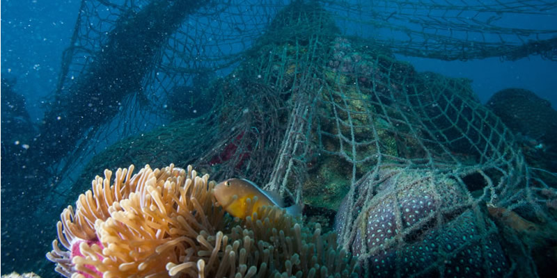
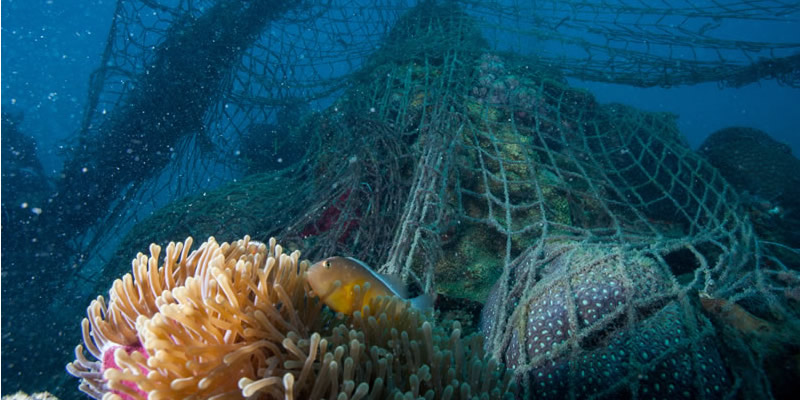
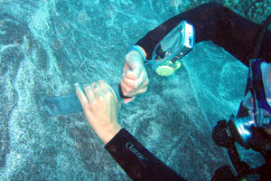
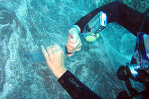

Misson: To Conserve and Sustainably Use the Oceans, Seas and Marine Resources for Sustainable Development
Where This Is Important:
- Fishing: If we fish irresponsibly, we can kill many marine species, threatening our ecosystem and potentially leading to seafood shortages. Regions such as Southeast Asia are the most affected by overfishing as it is a large part of the population's diet.
- Coral Reefs: Coral reefs are affected negatively by warming oceans, overfishing and pollution. The Great Barrier Reef has lost 50% of it's coral cover, along with many other reefs all over the world. They provide nurseries for many species of fish and protect coastlines from storms.
- Related Articles: Destructive Fishing, Fishing Threats, Coral Reef Decline
 

Why This Is Important:
- Pollution: Debris in the water can cause marine life to either die or consume large quantities of microplastics, making them harmful to consume. Most of the trash found in the ocean comes from land (such as imporoper waste management), rather than on the sea such as from boats.
- Excess nutrients: Eutrophication, usually caused by humans, causes large algae blooms to overtake sections of the water and induce hypoxia, rapidly depleting the oxygen supply for sea animals.
- Related Articles: Ocean Microplastics, Pollution Facts, Causes of Eutrophication


How This Is Important:
- Research: The studies of marine mammals coencide with the studies of humans, such how the consumption of microplastics affects the body, or how a whales long breath hold underwater relates to its ‘cancer-resisting cells’. We can learn a lot from animals, and can even save humans by using this research.
- Medicine: Pain killers, anti-bacterial and anti-tumor agents are all found in sea creatures such as deep-sea sponges and snails and extracted for the development of medicines for us humans. Without the existence of these species, modern medicine would not be what it is today.
- Related Articles: Cancer in Whales, Medicine from the Ocean
 
